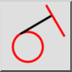

Ортогональна / дотична
Панель інструментів / Піктограма:


Меню: Побудова > Лінія > Ортогональна / дотична
Шорткод: L, N
Команди: lineorthogonaltangent | orthotangent
Панель інструментів / Піктограма:


Використовуйте цей інструмент для створення лінії, ортогональної до іншої лінії та дотичної до наявного об'єкта дуги, кола або еліпса.